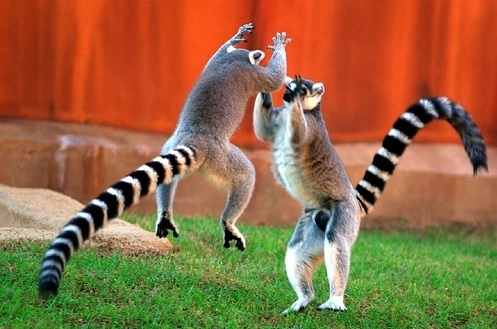
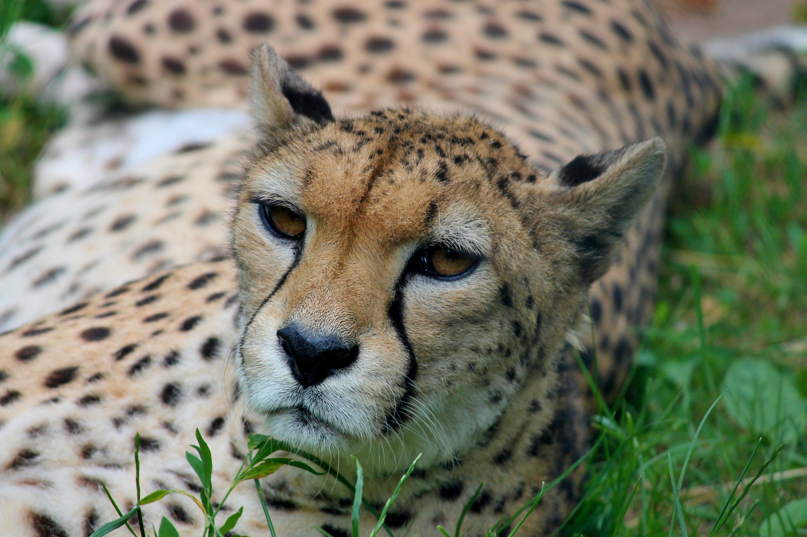
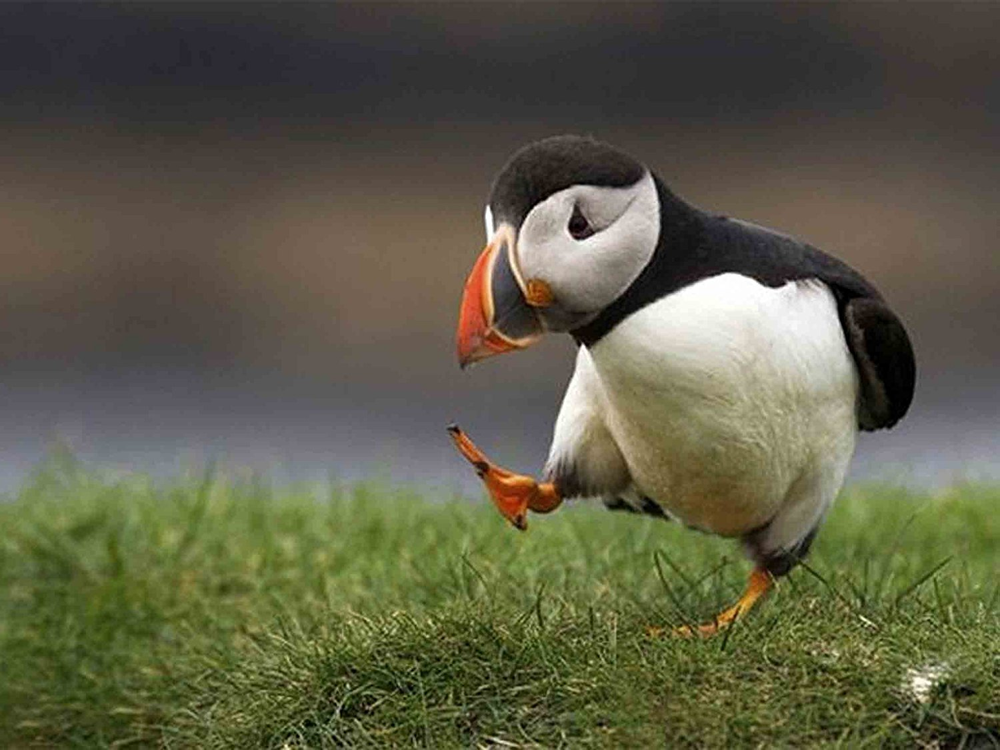

Welcome to the Zoo!

Our zoo features lots of special creatures and animals. Click around and take a look.
The fastest animal

Photo of Cheetah
The cheetah is a very fast animal and needs the speed to chase down its food.
A giant animal
Photo of Elephant
The elephant is a large animal with tusks.
A small colorful bird

Photo of Puffin
The puffin is a small bird with a colorful beak.
Hyenas love to laugh
Photo of Hyena
The hyena is always laughing, or at least sounds like it is.